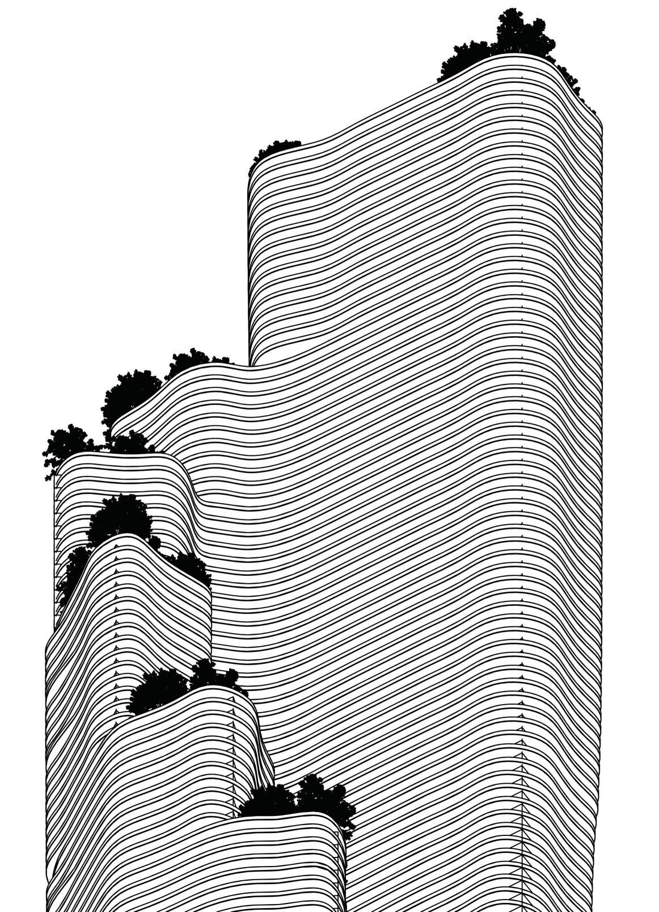

Reimagining Aqua Tower
A Chicago icon translated to a Pacific presence: a cascading tower shaped by wind, sun and view.
The project moves Chicago’s Aqua Tower into San Diego’s warm marine climate, in the Central Building District along the bay. Natural ventilation and cooling take priority to reduce thermal stress.
A staggered form, modeled after waves and terrestrial contours, carries green terraces and roof gardens that support community connection. Units use parallel windows to draw cross ventilation from prevailing western winds while capturing views of the Pacific and Balboa Park.
Irregular balconies act as shading devices for the floors below, with depths optimized through radiation simulation to reduce cooling demand and Energy Use Intensity. Daylight and thermal comfort studies test the result: 72% sDA, and an ASE of about 37.9% driven by the west-facing glass that frames the bay.
My contribution: I worked on the environmental simulations throughout the project, and I built the parametric radiation-to-form logic: each floor plate’s solar radiation is remapped to an overhang depth, so balcony depth increases where radiation is highest and updates whenever the simulation does.
